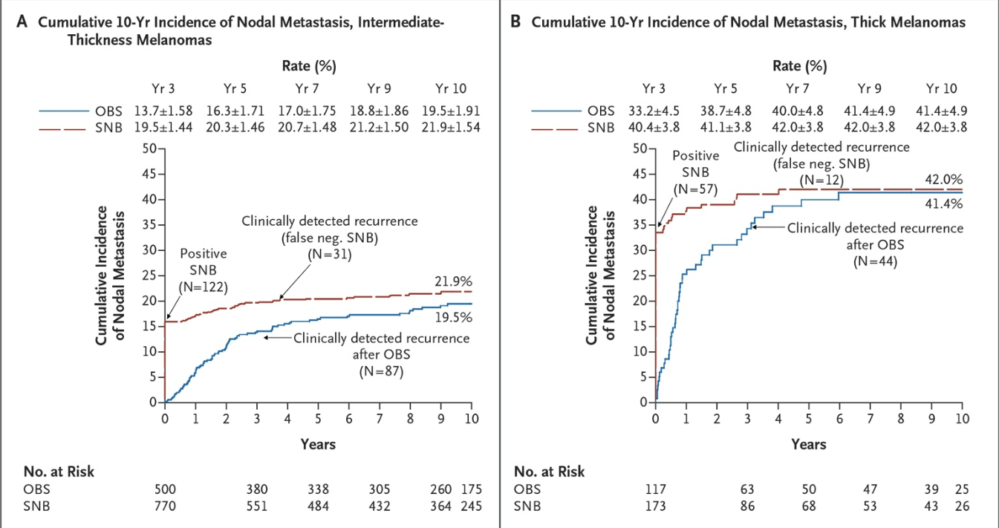
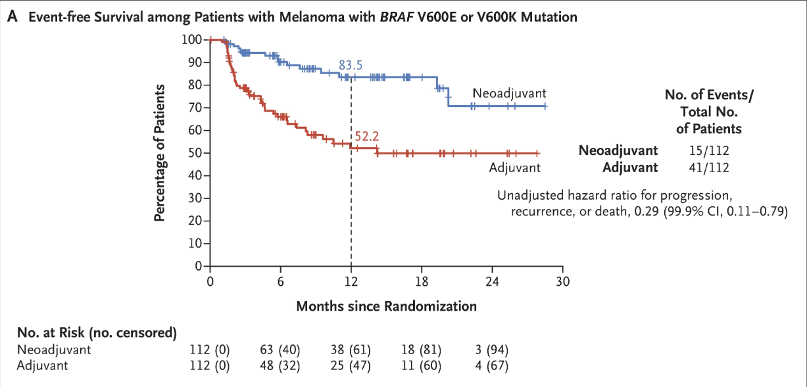
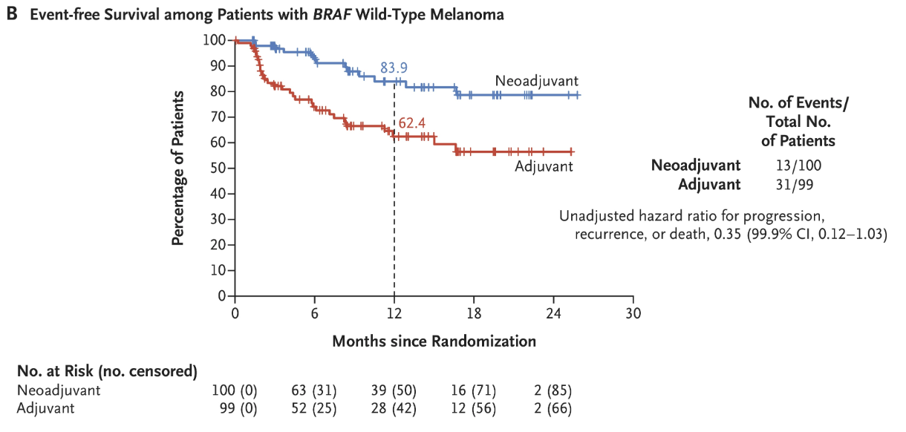
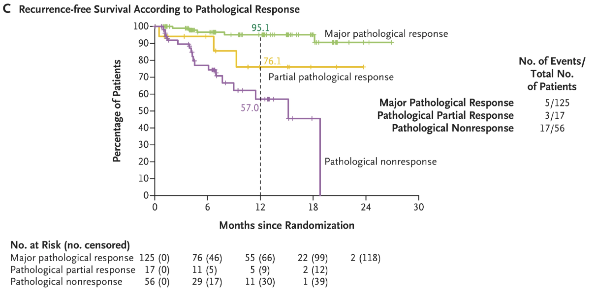

Melanoma
T1a Melanoma = Stage 1A
SLNB is not generally recommended for melanomas <0.8 mm thick without ulceration or other adverse features, as the probability of a positive sentinel node is <5%.
Exception: is when there is significant uncertainty about the depth of the lesion (e.g., positive deep margins or limited sampling of a larger lesion).
Melanoma T Staging
| T Category | Breslow Thickness | Ulceration | SLN Positivity |
|---|---|---|---|
| Tis | In situ | N/A | |
| T1a | 0.8mm | No | 5% |
| T1b | 0.8mm + ulceration or 0.8.-1.0mm \(\pm\) ulceration |
5-10% | |
| T2a | >1.0-2.0mm | No | >10% |
| T2b | >1.0-2.0mm | Yes | |
| T4a | >2.0-4.0mm | No | |
| T4b | >2.0-4.0mm | Yes | |
| T2a | >4.0mm | No | |
| T2b | >4.0mm | Yes |
T1b Melanoma = Stage 1B
Stage IA (T1a): SLNB is not generally recommended for melanomas <0.8 mm thick without ulceration or other adverse features, as the probability of a positive sentinel node is <5%.
An exception is when there is significant uncertainty about the adequacy of microstaging (e.g., positive deep margins or limited sampling of a larger lesion).
For T1a lesions >0.5 mm with other adverse features (age ≤42 years, head/neck location, lymphovascular invasion, and/or mitotic index ≥2/mm²), SLNB should also be discussed, with additive risk when multiple adverse features are present.
Stage IB (T2a) or Stage II (Tb2+)
Stage IB (T1b): SLNB should be considered for melanomas <0.8 mm thick with ulceration or 0.8-1.0 mm thick (with or without ulceration), as the probability of a positive sentinel node is 5-10%.
For T1a lesions >0.5 mm with other adverse features (age ≤42 years, head/neck location, lymphovascular invasion, and/or mitotic index ≥2/mm²), SLNB should be considered
Stage IB (T2a) or Stage II (Tb2+)
SLNB should be offered for melanomas >1.0 mm thick, as the probability of a positive sentinel node is generally >10%. This includes intermediate-thickness melanomas (T2 or T3; 1.0-4.0 mm) where SLNB is recommended, and thick melanomas (T4; >4.0 mm) where SLNB may be recommended after discussion of benefits and risks.
MSLT-I Clinical trial
2,001 patients with melanoma \(\ge\) 1.0mm randomized 40:60:
Wide Local Excision \(\rightarrow\) Observation (with delayed completion node dissection)
vs
Wide Local Excision + SLNB (with immediate completion node dissection if positive)
No difference in melanoma-specific survival
Slight improvement in disease-specific survival in intermediate and thick melanoma
MSLT-I Clinical trial

MSLT-I Clinical trial
Overall 20% of patients had lymph node metastasis
80% would not benefit from lymph node therapy
Study was underpowered to detect a difference in melanoma-specific survival
Excision Margins for Primary Melanoma
| Breslow Thickness | Recommended Peripheral Surgical Margin |
|---|---|
| In situ | 0.5–1 cm |
| ≤1.0 mm (T1) | 1 cm |
| >1.0–2.0 mm (T2) | 1–2 cm |
| >2.0–4.0 mm (T3) | 2 cm |
| >4.0 mm (T4) | 2 cm |
Staging
| Breslow Thickness | Recommended Peripheral Surgical Margin |
|---|---|
| In situ | 0.5–1 cm |
| ≤1.0 mm (T1) | 1 cm |
| >1.0–2.0 mm (T2) | 1–2 cm |
| >2.0–4.0 mm (T3) | 2 cm |
| >4.0 mm (T4) | 2 cm |
Node positive patients are staged with “PET/CT Whole Body.” This is different from PET used for staging GI cancers, which is “PET/CT Skull Base to Mid Thigh”
High risk patients will need either MRI or CT of brain
Treatment of Positive Sentinel Node
Active nodal basin ultrasound without completion lymph node dissection (CLND) is now the preferred approach for patients with positive sentinel lymph node biopsy
Surveillance should include nodal ultrasound every 4 months during the first 2 years, then every 6 months during years 3 through 5, then annually
MSLT-II Trial
1,934 Patients with positive sentinel nodes were randomized:
Completion lymph node dissection
vs
Observation (with periodic ultrasound of the draining node basin)
No difference in melanoma-specific survival
No difference in metastasis-free survival
Better disease-specific survival in CLND group (68% vs 63% at 3yrs)
MSLT-II Trial
1,934 Patients with positive sentinel nodes were randomized:
Completion lymph node dissection
vs
Observation (with periodic ultrasound of the draining node basin)
Non-sentinel lymph node metastasis was a negative prognostic factor
Lymphedema 24% with CLND vs 6.3% with SLNB and observation
Long-term: 80% of lymph node basins were free of nodal recurrence
Sentinel Node Biopsy for Pure Desomoplastic Melanoma
Pure desmoplastic melanoma (≥90% of invasive melanoma with prominent stromal fibrosis) has lower SLNB positivity rates (6%)
Sentinel Node Biopsy for In-Transit Metastasis
SLNB may be considered for isolated in-transit metastasis or local recurrence if it will affect adjuvant therapy decisions.
Stage III Treatment
BRAF V600 tumor mutation testing
IIIA T1a/b-T2a N1a OR N2a: Observation
- SLN Tumor deposits $$0.3mm: Low risk (similar to Stage IB)
- SLN Tumor deposits $$0.3mm: Higher risk
IIIB/C - Higher risk: Perioperative Systemic Therapy
NADINA Trial STAGE III Immunotherapy
423 Patients with III melanoma randomized:
Neoadjuvant ipilumimab + nivolumab x 2 \(\rightarrow\) Surgery
vs
Surgery \(\rightarrow\) Adjuvant nivolumab x 12
Neoadjuvant therapy: \(\Rightarrow\) 59% major pathologic response \(\rightarrow\) 90% 3yr relapse-free survival
NADINA Trial - Ipi/Nivo Neoadjuvant vs Adjuvant

## NADINA Trial - Ipi/Nivo Neoadjuvant vs Adjuvant
NADINA Trial - Ipi/Nivo Neoadjuvant vs Adjuvant

Adjuvant Systemic Therapy - Stage III B/C
Nivolumab - effective in AJCC 7th Edition stage IIIB/C disease
Pembrolizumab - effective in stage IIIA with SLN metastasis ≥1 mm or stage IIIB/C disease
Dabrafenib/trametinib - for BRAF V600 mutation-positive melanoma
Anti-PD-1 therapy (nivolumab, pembrolizumab) has shown improved 5-year recurrence-free survival compared to placebo or ipilimumab.
BRAF V600-mutant melanoma, dabrafenib/trametinib is an equally effective alternative to immunotherapy.
Resources
Cutaneous Melanoma. Lancet. 2023. Long GV, Swetter SM, Menzies AM, Gershenwald JE, Scolyer RA.
Cutaneous Melanoma. The Journal of the American Medical Association. 2025. Joshi UM, Kashani-Sabet M, Kirkwood JM.
Orientation Manual
References
Cutaneous Melanoma. Lancet. 2023. Long GV, Swetter SM, Menzies AM, Gershenwald JE, Scolyer RA.
Cutaneous Melanoma. The Journal of the American Medical Association. 2025. Joshi UM, Kashani-Sabet M, Kirkwood JM.